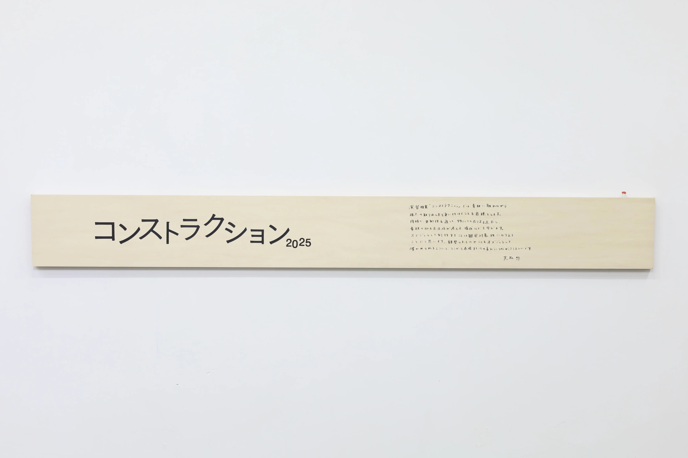
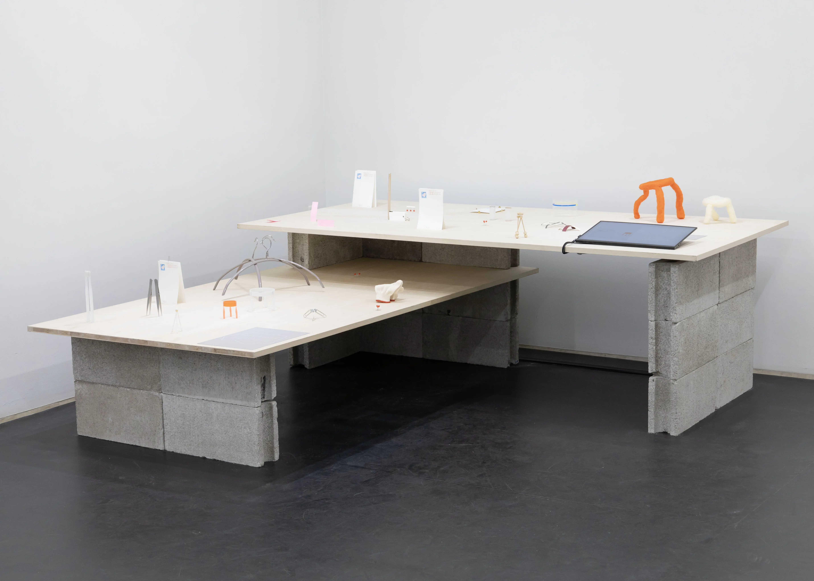
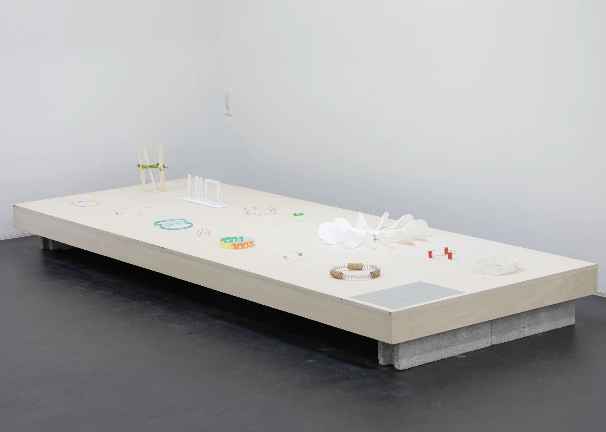
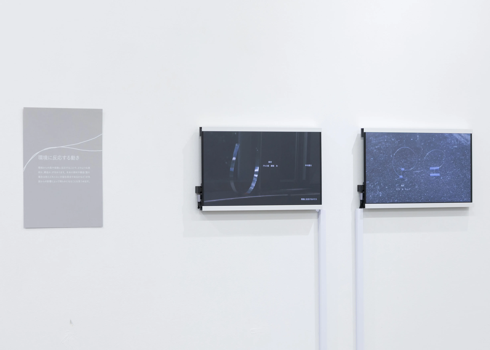
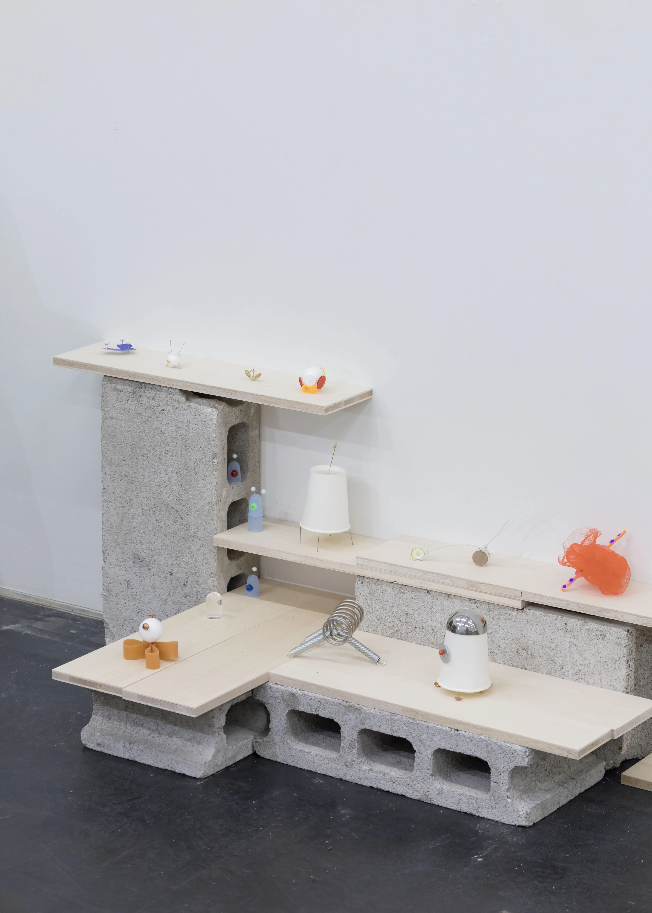
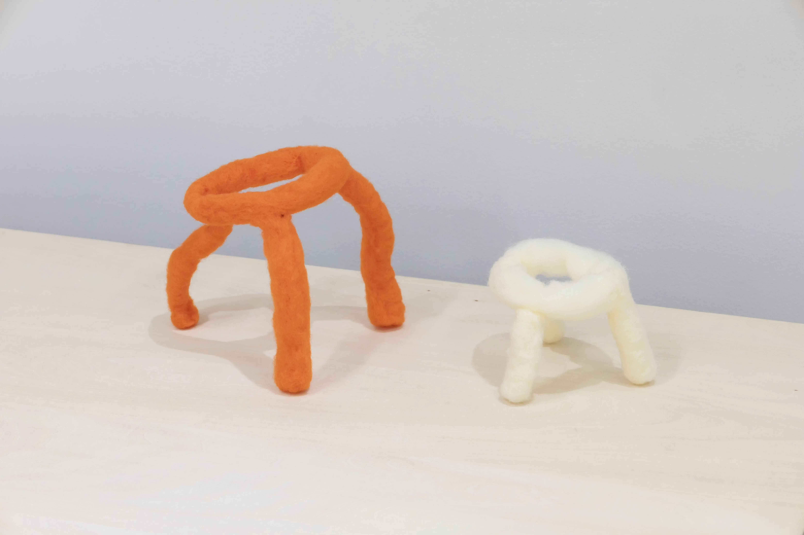
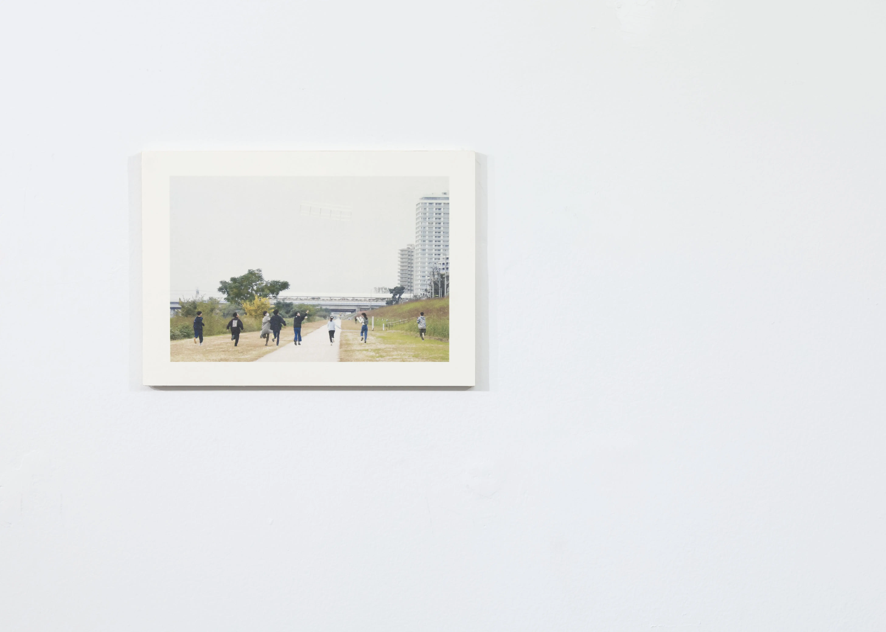
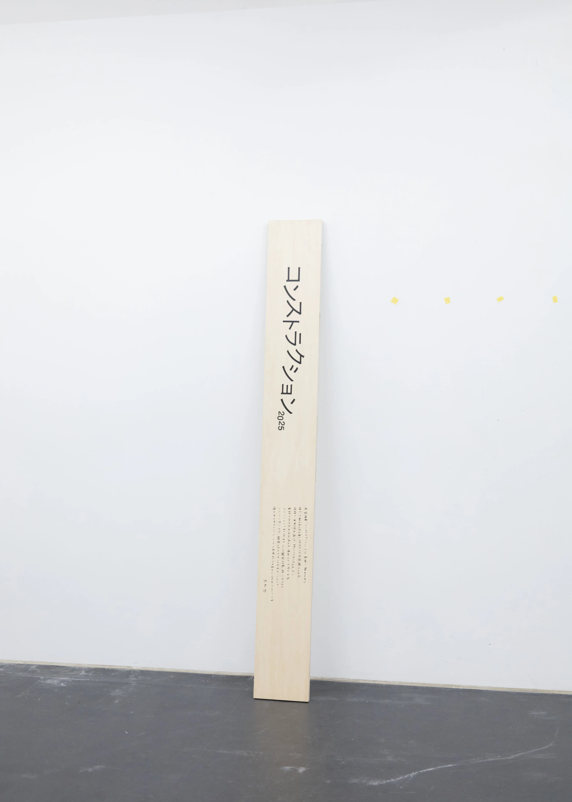
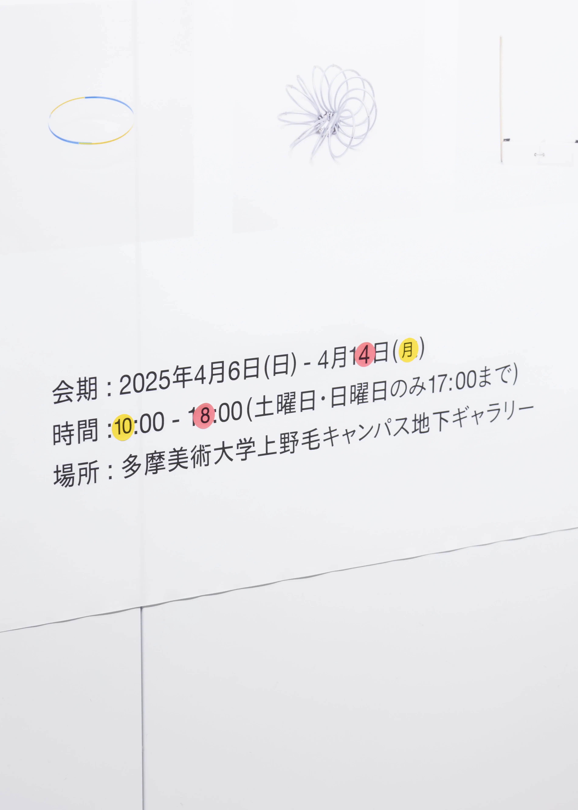
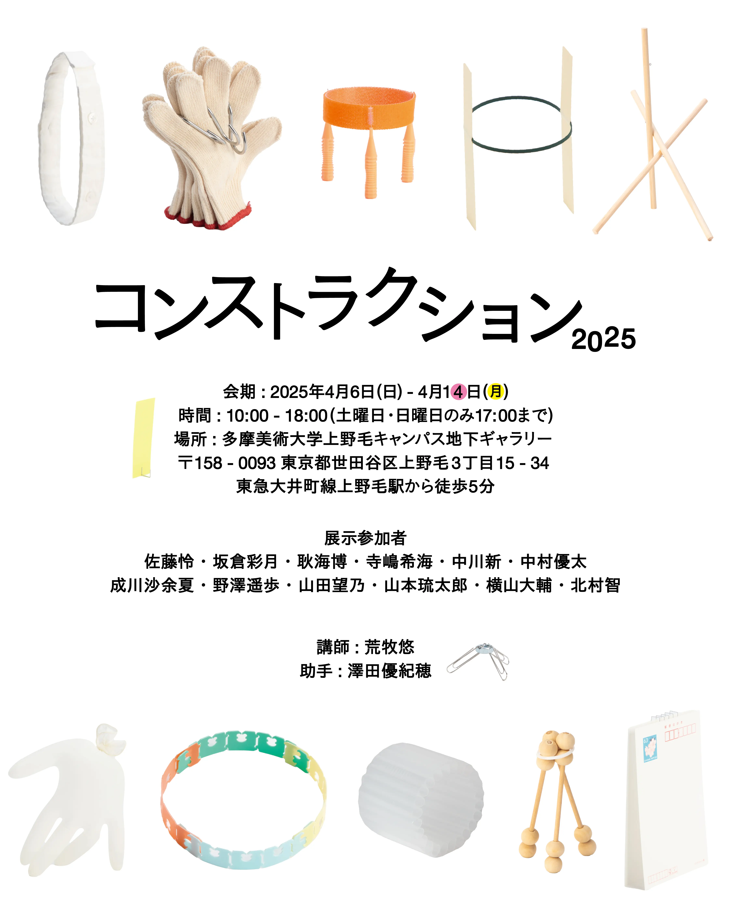

コンストラクション2025
演習授業コンストラクション2年目による学内成果展。私は印刷物を中心にデザインした。
[Exhibition]
Instructor : Haruka Aramaki
Assistant : Yukiho Sawada
Rei Sato, Satsuki Sakakura, Kaihaku Kou, Nozomi Terashima, Arata Nakagawa, Yuta Nakamura, Satoka Narikawa, Haruto Nozawa, Nono Yamada, Ryutaro Yamamoto, Daisuke Yokoyama, Satoshi Kitamura
D.P : Nozomi Terashima
Space Design : Arata Nakagawa, Haruto Nozawa
Movie : Haruto Nozawa
2025









